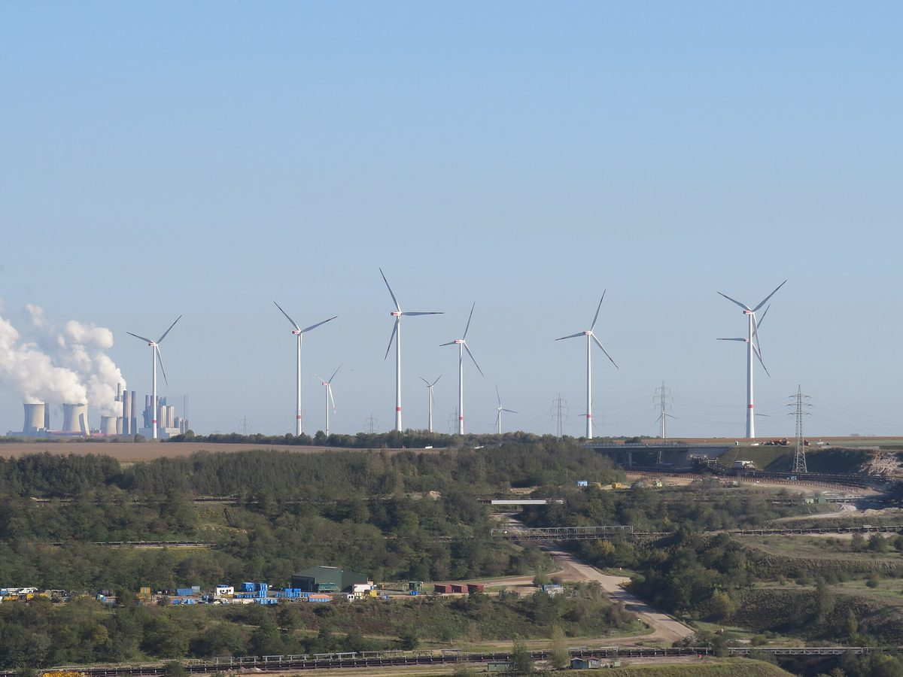

독일 베트부르크시, RWE와 49% 지분 나눠 가진 60MW 풍력단지 가동…갈탄 노천광산 옆 시 안 풍력 약 156MW로

9기 중 7기 7MW·2기 5.7MW, 이론상 약 3만6,500가구분…kWh당 0.2유로센트 주변 지자체에 연 최대 25만 유로, 주 시민에너지법으로 시 안 단체도 수익 나눔
독일 노르트라인베스트팔렌주 베트부르크시가 에너지기업 RWE와 함께 소유한 60MW 규모 풍력단지 베트부르크 3이 가동에 들어갔다. 라인 갈탄 지대 가르츠바일러 노천광산 가장자리에 들어선 이 단지는 풍력발전기 9기 가운데 7기가 7MW, 2기가 5.7MW이며 이론상 해마다 약 3만6,500가구가 쓸 전기를 낸다. 이미 가동 중인 쾨니히스호베너 회에(67MW), 베트부르크 A44n(29MW)과 함께 세 단지 모두 RWE가 51%, 시가 49%를 갖고 있어 두 곳이 시 안에서 함께 운영하는 풍력은 약 156MW가 됐다. RWE는 생산한 전기 1kWh마다 0.2유로센트를 주변 지자체에 내며 그 액수는 해마다 최대 25만 유로에 이르고 가장 큰 몫은 베트부르크가 받는다. 주 시민에너지법에 따라 베트부르크의 지역 단체들도 수익을 나눠 받을 수 있으며 신청 절차는 시가 맡는다. 사샤 졸바흐 시장은 주민이 이 사업에서 직접 혜택을 받아야 한다고 밝혔고, 인근 A44n 고속도로변 태양광을 100MWp 넘게 늘리고 75MW 배터리를 짓고 있는 RWE는 탈석탄 뒤에도 이 지역이 에너지 지역으로 남을 것이라고 했다.
시민에너지 관점
베트부르크는 발전소 옆에서 보상금을 받는 데 그치지 않고 시가 지분 49%를 직접 가져 풍력 약 156MW의 공동 주인이 됐다. 대기업과 손잡으면 결국 수익의 주도권은 기업에 있다는 우려도 있지만, 지분을 가진 시는 운영 결정에 목소리를 내고 배당을 공공 재원으로 돌릴 수 있다. 여기에 주 법으로 지역 단체까지 수익을 나누게 한 것은 이익 공유를 선의가 아닌 제도로 만든 사례다. 우리 지자체도 석탄발전소가 문을 닫는 지역부터 재생에너지 사업 지분을 지자체와 주민이 함께 갖도록 하는 조례와 공기업 출자 구조를 서둘러 마련해야 한다.
출처: energynews.pro 2026-11-09 The newsroom 원문 보기
창간 전 시험 발행 기사입니다.
ドイツ・ベートブルク市、RWEと49%の持ち分を分け合う60MW風力発電所が稼働…褐炭露天掘り炭鉱そばの市内風力は約156MWに
9基のうち7基が7MW・2基が5.7MW、理論上約3万6,500世帯分…1kWh当たり0.2ユーロセントを周辺自治体に年最大25万ユーロ、州の市民エネルギー法で市内の団体にも収益配分
ドイツ・ノルトライン＝ヴェストファーレン州のベートブルク市がエネルギー企業RWEと共同で所有する60MW規模の風力発電所「ベートブルク3」が稼働を始めた。ライン褐炭地帯のガルツヴァイラー露天掘り炭鉱の縁に建つこの発電所は、風車9基のうち7基が7MW、2基が5.7MWで、理論上は年に約3万6,500世帯分の電気を生む。すでに稼働しているケーニヒスホーフェナー・ヘーエ（67MW）、ベートブルクA44n（29MW）とあわせ、3発電所はいずれもRWEが51%、市が49%を持ち、両者が市内で共同運営する風力は約156MWとなった。RWEは発電した電気1kWhごとに0.2ユーロセントを周辺自治体に支払い、その額は年最大25万ユーロに達し、最も大きな分け前はベートブルクが受け取る。州の市民エネルギー法により、ベートブルクの地域団体も収益の分配を受けることができ、申請手続きは市が担う。ザシャ・ゾルバッハ市長は住民がこの事業から直接恩恵を受けるべきだと述べ、近くのA44n高速道路沿いの太陽光を100MWp超に増やし、75MWの蓄電池を建設しているRWEは、石炭からの撤退後もこの地域はエネルギー地域であり続けると述べた。
市民エネルギーの視点
ベートブルクは発電所の隣で補償金を受け取るだけでなく、市が49%の持ち分を直接持ち、約156MWの風力の共同所有者になった。大企業と組めば結局は収益の主導権が企業にあるとの懸念もあるが、持ち分を持つ市は運営の決定に声を上げ、配当を公共の財源に回すことができる。さらに州法で地域団体まで収益を分け合えるようにしたことは、利益共有を善意ではなく制度にした例だ。韓国の自治体も、石炭火力が閉鎖される地域から、再エネ事業の持ち分を自治体と住民がともに持てるよう、条例と公企業の出資の仕組みを急いで整えるべきだ。
出典: energynews.pro 2026-11-09 The newsroom 原文を読む
創刊前の試験発行記事です。
德国贝德堡市与RWE分持49%股份的60兆瓦风电场投运，褐煤露天矿旁市内风电增至约156兆瓦
9台风机中7台为7兆瓦、2台为5.7兆瓦，理论上约供3万6,500户…每千瓦时0.2欧分付给周边市镇，每年最多25万欧元；依据州公民能源法，市内团体也可分享收益
德国北莱茵-威斯特法伦州贝德堡市与能源企业RWE共同持有的60兆瓦风电场“贝德堡3号”已投入运行。该风电场位于莱茵褐煤区加尔茨魏勒露天矿边缘，9台风机中有7台单机7兆瓦、2台单机5.7兆瓦，理论上每年可满足约3万6,500户家庭用电。连同已在运行的柯尼希斯霍文高地（67兆瓦）和贝德堡A44n（29兆瓦），三座风电场均由RWE持股51%、市政府持股49%，双方在市内共同运营的风电装机达到约156兆瓦。RWE每发1千瓦时电向周边市镇支付0.2欧分，每年最多可达25万欧元，其中贝德堡所得份额最大。根据州公民能源法，贝德堡的地方团体也可分享收益，申请程序由市政府负责。市长萨沙·佐尔巴赫表示，居民应从该项目中直接受益；正把附近A44n高速公路沿线光伏扩大到100兆瓦峰值以上、并在建75兆瓦电池储能的RWE则表示，退煤之后这一地区仍将是能源地区。
市民能源视角
贝德堡没有止步于在电站旁领取补偿，而是由市政府直接持有49%的股份，成为约156兆瓦风电的共同所有者。有人担心与大企业合作，收益主导权终究在企业手中，但持股的市政府可以在运营决策中发声，并把分红用作公共财源。再加上州法律让地方团体也能分享收益，这是把利益共享从善意变成制度的例子。韩国地方政府也应从煤电厂即将关闭的地区开始，尽快制定条例并建立公营企业出资结构，让地方政府和居民共同持有可再生能源项目的股份。
来源: energynews.pro 2026-11-09 The newsroom 查看原文
本文为创刊前试发行文章。
German Town of Bedburg Starts Up 60MW Wind Farm Co-Owned 49% with RWE, Bringing Wind Capacity Next to Lignite Mine to About 156MW
Seven of nine turbines are 7MW and two are 5.7MW, enough in theory for about 36,500 households; 0.2 euro cents per kWh goes to neighbouring municipalities, up to 250,000 euros a year, and local associations share revenue under the state citizen energy law
The 60MW Bedburg 3 wind farm, co-owned by the town of Bedburg in North Rhine-Westphalia, Germany, and energy company RWE, has gone into operation. Built on the edge of the Garzweiler open-pit lignite mine in the Rhenish mining area, the farm has nine turbines, seven rated at 7MW and two at 5.7MW, and can in theory supply electricity for about 36,500 households a year. Together with the existing Königshovener Höhe (67MW) and Bedburg A44n (29MW) farms, all three projects are owned 51% by RWE and 49% by the town, bringing the wind capacity the partners operate jointly within the municipality to about 156MW. RWE pays neighbouring municipalities 0.2 euro cents for every kilowatt-hour produced, amounting to as much as 250,000 euros a year, with Bedburg receiving the largest share. Under the state's citizen energy law, local associations in Bedburg can also share in the revenue, with the town running the application process. Mayor Sascha Solbach said residents should benefit directly from the project, while RWE, which is expanding its solar plant along the nearby A44n motorway to more than 100MWp and building a 75MW battery, says the area will remain an energy region after the coal phase-out.
Citizen Energy View
Bedburg did not settle for compensation next to a power plant; the town took a 49% stake directly and became co-owner of about 156MW of wind. Some worry that partnering with a large company leaves control of the profits with the company, but a town holding equity can speak up on operating decisions and channel dividends into public budgets. On top of that, a state law that lets local associations share the revenue turns benefit-sharing from goodwill into an institution. Korean local governments, starting with regions where coal plants are closing, should move quickly to set up ordinances and public-enterprise investment structures so that local authorities and residents jointly hold stakes in renewable projects.
Source: energynews.pro 2026-11-09 The newsroom Read the original
This article was published during the trial period before launch.